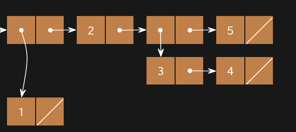

实验 9：Scheme、Scheme 列表
起始文件
下载 lab09.zip。
Scheme
Scheme 是 20 世纪 70 年代著名的函数式编程语言，是 Lisp（意为 LISt Processing，即列表处理）的一种方言。Scheme 的语法非常独特：它采用前缀表示法，并包含大量嵌套的括号（参见 http://xkcd.com/297/）。Scheme 具有一等函数和经过优化的尾递归，这些特性在 Scheme 问世时还相当新颖。
Scheme 规范以及内置过程参考是查阅 Scheme 语法的好资料。
推荐的 VS Code 扩展
如果你选择使用 VS Code 作为文本编辑器（而不是网页版编辑器），请安装 vscode-scheme 扩展，以便括号能够高亮显示。
之前：

之后：

如果你需要复习 Scheme/Scheme 链表，请查阅下面的折叠内容。你可以直接跳到 the questions，遇到困难时再回来查阅。
原子表达式（也称为 atom）是没有子表达式的表达式，例如数字、布尔值和符号。
scm> 1234 ; integer
1234
scm> 123.4 ; real number
123.4
scm> #f ; the Scheme equivalent of False in Python
#fScheme 的符号（symbol）相当于 Python 中的名字。符号求值的结果是当前环境中绑定到该符号的值。（它们之所以被称为符号而不是名字，是因为它们包含 + 以及其他算术符号。）
scm> quotient ; A symbol bound to a built-in procedure
#[quotient]
scm> + ; A symbol bound to a built-in procedure
#[+]在 Scheme 中，除 #f（相当于 Python 中的 False）之外的所有值都是真值（这与 Python 不同，Python 还有其他假值，例如 0）。
scm> #t
#t
scm> #f
#fScheme 中所有非基本表达式都称为组合式（combination），其语法如下：
(<operator> <operand1> <operand2> ...)组合式是把多个表达式组合起来的表达式。这里 <operator>、<operand1> 和 <operand2> 都是表达式。操作数的个数取决于运算符。组合式有两种类型：
- 调用表达式，其运算符求值得到一个过程（procedure）
- 特殊形式表达式，其运算符是一个特殊形式（special form）
Scheme 使用波兰前缀表示法，其中运算符表达式位于操作数表达式之前。例如，要计算 3 * (4 + 2)，我们写成：
scm> (* 3 (+ 4 2))
18与 Python 一样，求值一个调用表达式时要：
- 求值运算符，它应该求值得到一个过程（procedure）。
- 从左到右求值各个操作数。
- 把过程作用到已求值的操作数上。
下面是几个使用内置过程的例子：
scm> (+ 1 2)
3
scm> (- 10 (/ 6 2))
7
scm> (modulo 35 4)
3
scm> (even? (quotient 45 2))
#tdefine：
define 形式用于给符号赋值，其语法如下：
(define <symbol> <expression>)scm> (define pi (+ 3 0.14))
pi
scm> pi
3.14求值 define 表达式时：
- 求值最后一个子表达式（
<expression>），在这个例子里它求值为3.14。 - 把这个值绑定到符号 (
symbol) 上，在这个例子里就是pi。 - 返回该符号。
define 形式也可以定义新的过程，详见「定义函数」一节。
if 表达式：
if 特殊形式根据谓词（predicate）对两个表达式之一求值。
(if <predicate> <if-true> <if-false>)对 if 特殊形式表达式求值的规则如下：
- 对
<predicate>求值。 - 如果
<predicate>求值为真值（任何不是#f的值），则对<if-true>表达式求值并返回其值；否则对<if-false>表达式求值并返回其值。
例如，下面这个表达式不会报错，并且求值为 5，尽管子表达式 (/ 1 (- x 3)) 如果被求值就会报错。
scm> (define x 3)
x
scm> (if (> (- x 3) 0) (/ 1 (- x 3)) (+ x 2))
5<if-false> 表达式是可选的。
scm> (if (= x 3) (print x))
3我们把 Scheme 的 if 表达式与 Python 的 if 语句比较一下：
- 在 Scheme 中：
(if (> x 3) 1 2)- 在 Python 中：
if x > 3:
1
else:
2Scheme 的 if 表达式求值得到一个数字（1 或 2，取决于 x）。而 Python 的语句不求值得到任何东西，因此其中的 1 和 2 无法被使用或访问。
两者的另一个区别是：Python 的 if 语句的代码块中可以加入更多行代码，而 Scheme 的 if 表达式在 <if-true> 和 <if-false> 两个位置上都只期望一个表达式。
最后一个区别是：在 Scheme 中无法编写 elif 子句。
cond 表达式：
cond 特殊形式可以包含多个谓词（类似 Python 中的 if/elif）：
(cond
(<p1> <e1>)
(<p2> <e2>)
...
(<pn> <en>)
(else <else-expression>))每个子句中的第一个表达式是谓词，第二个表达式是与该谓词对应的返回表达式。else 子句是可选的；如果所有谓词都不为真，它的 <else-expression> 就是返回表达式。
求值规则如下：
- 按顺序求值谓词
<p1>、<p2>、……、<pn>，直到其中一个求值为真值（#f以外的任何值）。 - 求值并返回第一个求值为真的谓词表达式所对应的返回表达式。
- 如果所有谓词都不求值为真，并且存在
else子句，则求值并返回<else-expression>。
例如，下面这个 cond 表达式返回距离 x 最近的 3 的倍数：
scm> (define x 5)
x
scm> (cond ((= (modulo x 3) 0) x)
((= (modulo x 3) 1) (- x 1))
((= (modulo x 3) 2) (+ x 1)))
6lambda：
lambda 特殊形式用于创建过程（procedure）。
(lambda (<param1> <param2> ...) <body>)该表达式会创建并返回一个具有给定形参和函数体的过程，类似于 Python 中的 lambda 表达式。
scm> (lambda (x y) (+ x y)) ; Returns a lambda procedure, but doesn't assign it to a name
(lambda (x y) (+ x y))
scm> ((lambda (x y) (+ x y)) 3 4) ; Create and call a lambda procedure in one line
7下面是 Python 中对应的等价写法：
>>> lambda x, y: x + y
<function <lambda> at ...>
>>> (lambda x, y: x + y)(3, 4)
7<body> 可以包含多个表达式。Scheme 过程返回其函数体中最后一个表达式的值。
define 形式可以创建一个过程并为它命名：
(define (<symbol> <param1> <param2> ...) <body>)例如，下面是我们定义 double 过程的方式：
scm> (define (double x) (* x 2))
double
scm> (double 3)
6下面是一个带三个参数的例子：
scm> (define (add-then-mul x y z)
(* (+ x y) z))
scm> (add-then-mul 3 4 5)
35当 define 表达式被求值时，会发生以下事情：
- 创建一个具有给定参数和
<body>的过程。 - 在当前帧（frame）中把该过程绑定到
<symbol>。 - 返回
<symbol>。
以下两个表达式是等价的：
scm> (define add (lambda (x y) (+ x y)))
add
scm> (define (add x y) (+ x y))
add在阅读本节时，你可能难以理解 Scheme 各种容器表示形式之间的区别。我们建议你使用 在线 Scheme 解释器 来查看那些你难以想象的 pair 和 list 的盒指针图！（使用命令
(autodraw)可以切换是否自动绘制图表。）
列表
Scheme 的 list 与我们在 Python 中一直使用的链表非常相似。正如链表由一系列 Link 对象构成，Scheme 的 list 由一系列 pair 构成，而 pair 是用构造函数 cons 创建的。
Scheme 的 list 要求 cdr 要么是另一个 list，要么是 nil（空表）。list 在解释器中显示为值的序列（类似于 Link 对象的 __str__ 表示）。例如，
scm> (cons 1 (cons 2 (cons 3 nil)))
(1 2 3)在这里，我们确保了每个 cons 表达式的第二个参数都是另一个 cons 表达式或 nil。

我们可以用 car 和 cdr 过程从 list 中取出值，它们的作用现在类似于 Python 中 Link 的 first 和 rest 属性。（想知道这些奇怪的名字从何而来吗？看看它们的词源）
scm> (define a (cons 1 (cons 2 (cons 3 nil)))) ; Assign the list to the name a
a
scm> a
(1 2 3)
scm> (car a)
1
scm> (cdr a)
(2 3)
scm> (car (cdr (cdr a)))
3如果你传给 cons 的第二个参数不是 pair 或 nil，它就会报错：
scm> (cons 1 2)
Errorlist 过程
还有其他几种创建 list 的方式。list 过程接收任意数量的参数，并用这些参数的值构造一个 list：
scm> (list 1 2 3)
(1 2 3)
scm> (list 1 (list 2 3) 4)
(1 (2 3) 4)
scm> (list (cons 1 (cons 2 nil)) 3 4)
((1 2) 3 4)注意，该表达式中所有的操作数都会先被求值，然后才被放入结果 list 中。
quote 形式
我们也可以用 quote 形式来创建 list，它会原样构造所给出的那个 list。与 list 过程不同，' 的参数不会被求值。
scm> '(1 2 3)
(1 2 3)
scm> '(cons 1 2) ; Argument to quote is not evaluated
(cons 1 2)
scm> '(1 (2 3 4))
(1 (2 3 4))list 的内置过程
Scheme 中还有一些用于 list 的其他内置过程。可以在解释器中试一试！
scm> (null? nil) ; Checks if a value is the empty list
True
scm> (append '(1 2 3) '(4 5 6)) ; Concatenates two lists
(1 2 3 4 5 6)
scm> (length '(1 2 3 4 5)) ; Returns the number of elements in a list
5
scm> (list-ref '(1 2 3 4 5) 2) ; Returns the element at a given index (0-indexed)
3
scm> (car '(1 2 3)) ; Returns the first element of a list
1
scm> (cdr '(1 2 3)) ; Returns all elements after the first
(2 3)
scm> (reverse '(1 2 3 4 5)) ; Reverses the order of a list
(5 4 3 2 1)用于 list 的高阶过程
map、filter 和 reduce 让你无需写出显式的递归就能转换或处理 list。
scm> (map (lambda (x) (* x x)) '(1 2 3 4)) ; Applies a procedure to every element
(1 4 9 16)
scm> (filter (lambda (x) (> x 2)) '(1 2 3 4)) ; Keeps only elements that satisfy a predicate
(3 4)
scm> (reduce + '(1 2 3 4)) ; Combines all elements using a procedure, left to right
10一个有助于理解它们区别的思路：
map— 转换每个元素，元素个数保持不变。就像你沿着 list 往下走，把每一项替换成(fn item)。filter— 保留或丢弃每个元素，但从不改变元素。它测试一个“是/否”谓词：是则原样保留，否则丢弃。reduce— 把整个 list 折叠成单个值（使用一个从左到右的合并过程）
这三个过程往往可以替代那种需要写基本情况与递归情况的递归函数。看看其中一个手工写出来大致是什么样子，可能对你有帮助：
手动编写 map：
scm> (define (my-map fn lst)
(if (null? lst)
nil
(cons (fn (car lst)) (my-map fn (cdr lst)))))
scm> (my-map (lambda (x) (* x x)) '(1 2 3 4))
(1 4 9 16)看到这里，这三个高阶过程其实只是 Scheme 为你内置的常见递归模式。
以 map 为例，它已经帮你把 cons、cdr 和基本情况的工作都做好了！
必做题
Scheme
Q1：高于还是低于
定义一个过程 over-or-under，它接收一个数 num1 和一个数 num2，并返回以下结果：
- 如果
num1小于num2，则返回 -1 - 如果
num1等于num2，则返回 0 - 如果
num1大于num2，则返回 1
注意： 记住，Scheme 中的每一对括号都构成一次函数调用。例如，在 Scheme 解释器中只输入
0会返回0；但如果输入(0)，则会引发 Error，因为0不是一个函数。
挑战：分别用 if 和 cond 两种不同的方式实现它！
(define (over-or-under num1 num2)
'YOUR-CODE-HERE
)用 ok 测试你的代码：
python3 ok -q over_or_underQ2：复合函数
编写过程 composed，它接收过程 f 和 g，并返回一个新过程。这个新过程接收一个数 x，并返回对 g(x) 调用 f 的结果。
注意：调用函数时记得使用 Scheme 语法。形式是
(func arg)，而不是func(arg)。
(define (composed f g)
'YOUR-CODE-HERE
)用 ok 测试你的代码：
python3 ok -q composedQ3：重复
编写过程 repeat，它接收一个过程 f 和一个数 n，并返回一个新过程。这个新过程接收一个数 x，并返回对 x 调用 f 共 n 次的结果。例如：
scm> (define (square x) (* x x))
square
scm> ((repeat square 2) 5) ; (square (square 5))
625
scm> ((repeat square 3) 3) ; (square (square (square 3)))
6561
scm> ((repeat square 1) 7) ; (square 7)
49提示：你在上一题中编写的
composed函数可能会派上用场。
(define (repeat f n)
'YOUR-CODE-HERE
)用 ok 测试你的代码：
python3 ok -q repeatScheme 列表
Q4：WWSD：列表
用 ok 回答下面的「Scheme 会输出什么？」题目：
python3 ok -q wwsd_lists -u
scm> (cons 1 (cons 2 nil))
______(1 2)
scm> (car (cons 1 (cons 2 nil)))
______1
scm> (cdr (cons 1 (cons 2 nil)))
______(2)
scm> (list 1 2 3)
______(1 2 3)
scm> '(1 2 3)
______(1 2 3)
scm> (cons 1 '(list 2 3)) ; Recall quoting
______(1 list 2 3)
scm> (cons 1 `(list 2 3)) ; Quasiquotes also work as quotes!
______(1 list 2 3)
scm> '(cons 4 (cons (cons 6 8) ()))
______(cons 4 (cons (cons 6 8) ()))
scm> (cons 1 (list (cons 3 nil) 4 5))
______(1 (3) 4 5)Q5：创建一个列表
本题中，你需要创建下面这个 box-and-pointer 图所表示的列表：

挑战：尝试用多种方式创建这个列表，并使用多种列表构造函数！
(define lst
'YOUR-CODE-HERE
)用 ok 解锁并测试你的代码：
python3 ok -q make_structure -u
python3 ok -q make_structureQ6：去除重复元素
实现 without-duplicates，它接收一个数字列表 lst 作为输入，并返回一个列表，其中包含 lst 中所有不重复的元素，且按它们首次出现的顺序排列。例如，(without-duplicates (list 5 4 5 4 2 2)) 的求值结果为 (5 4 2)。
提示：要判断两个数是否相等，使用 = 过程。要判断两个数是否不相等，可以结合使用 not 过程和 =。你可能会发现，把 filter 过程与一个用作筛选条件的辅助 lambda 函数配合使用会很有帮助。
(define (without-duplicates lst)
'YOUR-CODE-HERE
)用 ok 解锁并测试你的代码：
python3 ok -q without_duplicates -u
python3 ok -q without_duplicates本地查看得分
你可以在本地查看本次作业每道题的得分，运行：
python3 ok --score